Vấn đề và giải pháp
Từ 01/7/2025, Thanh Hóa vận hành chính quyền địa phương 2 cấp: 166 xã/phường báo cáo trực tiếp các sở, ngành — cùng một số liệu phải nhập đi nhập lại nhiều biểu, nhiều nơi. Mô hình "Một dữ liệu – Không báo cáo lại" cắt gánh nặng đó: số liệu nhập một lần tại nguồn vào Kho dữ liệu dùng chung; báo cáo thể thức chuẩn do máy tự soạn; lãnh đạo hỏi – đáp trực tiếp trên dữ liệu. Căn cứ trực tiếp: Quyết định số 2053/QĐ-UBND ngày 07/7/2026 và số 2176/QĐ-UBND ngày 20/7/2026 của Chủ tịch UBND tỉnh — trong đó quy định phân quyền cho UBND cấp xã cập nhật dữ liệu, "không yêu cầu báo cáo thủ công".
Mới ở v0.2: Kho dữ liệu HAI LỚP — BA KÊNH thu nhận
📚 Lớp 1 — Văn bản, tri thức số
Toàn văn báo cáo, kế hoạch, thông báo điện tử + tìm kiếm toàn văn FTS5, chạy offline. Văn bản MẬT bị chặn tự động khỏi tìm kiếm, AI và trích xuất.
🤖 Kênh 2 — Máy trích xuất, người xác nhận (ĐIỂM NHẤN)
Xã tải báo cáo vừa phát hành — máy đọc được "45.000 triệu đồng", "27,0%", "1.250 hồ sơ" từ chính câu văn, kèm câu trích dẫn bôi đậm con số. Công chức chỉ bấm Xác nhận, không gõ lại vào biểu mẫu nào.
🔗 Lớp 2 — Chỉ tiêu có cấu trúc
Mỗi con số mang đủ: kênh thu nhận (hệ thống / trích từ văn bản / nhập tay), liên kết về đúng văn bản gốc và tên người xác nhận. AI hỏi đáp xuyên cả hai lớp: số liệu + trích dẫn văn bản, bắt buộc dẫn nguồn.
Hơn IOC ở tầng nào?
IOC của tỉnh là màn hình hiển thị đặt trên các báo cáo thủ công — trả lời "chuyện gì đã xảy ra". Giải pháp này bổ sung đúng tầng IOC chưa có:
| IOC hiện nay | Một dữ liệu – Không báo cáo lại | |
|---|---|---|
| Đầu vào | Xã/sở vẫn phải lập báo cáo nộp lên | Nhập một lần tại nguồn / đồng bộ từ CSDL chuyên ngành |
| Thời điểm | Nhìn quá khứ, theo kỳ báo cáo | Dự báo 31/12, cảnh báo trước khi hụt mục tiêu nghị quyết |
| Cách dùng | Lãnh đạo tự nhìn, tự luận | Máy tham mưu: 3 việc cần chỉ đạo hôm nay + dự thảo công văn NĐ30 sẵn để ký |
| Nguồn gốc số liệu | Không truy được (số đã qua tổng hợp) | Hộ chiếu số liệu: 2 giây biết ai nhập, lúc nào, từ nguồn nào |
| Đo hiệu quả | Không tự đo được | Đồng hồ tiết kiệm: đếm lượt báo cáo/giờ công đã thay thế |
Kế thừa 100% hạ tầng — không mua phần cứng mới
Sở Tài chính — sẵn có
TT PVHCC tỉnh — sẵn có
Sở NN&MT, Sở Nội vụ — sẵn có
nhập MỘT LẦN phần chưa có hệ thống
(nền tảng chia sẻ sẵn có)
+ MÁY THAM MƯU
lớp phần mềm MỚI duy nhất
phần cứng sẵn có — nguồn cấp mới
8 phân hệ + máy tham mưu
📝 Nhập liệu tại nguồn
Chuyên viên xã nhập MỘT LẦN; chỉ tiêu dẫn xuất (tỷ lệ %) hệ thống tự tính theo công thức; kiểm tra dữ liệu theo quy tắc, cảnh báo số liệu bất thường.
📊 Dashboard điều hành
Thẻ tổng hợp 3 lĩnh vực, xếp hạng giải ngân theo xã, diễn biến 7 tháng, lọc theo kỳ và vùng — mọi con số kèm nguồn CSDL và thời điểm cập nhật.
📄 Máy soạn báo cáo NĐ30
Sinh file .docx đúng thể thức Nghị định 30/2020/NĐ-CP; 15 báo cáo cho 15 xã trong chưa đầy 1 giây, nhận định tự động so sánh kỳ trước, xếp hạng.
💬 Hỏi – đáp dữ liệu AI
Hỏi bằng tiếng Việt, trả lời kèm bảng số liệu + câu SQL đã kiểm soát (allowlist, chỉ SELECT) + nguồn. AI không được bịa số liệu.
🔥 Cảnh báo sớm
Bảng "điểm nóng" theo ngưỡng: giải ngân dưới 30%, TTHC đúng hạn dưới 90%, chưa nhập đủ số liệu, số liệu nghi sai — lãnh đạo nhìn thấy ngay.
🏛️ Giám sát HĐND
Đại biểu theo dõi chỉ tiêu theo nghị quyết với thanh tiến độ đạt/chưa đạt — không cần yêu cầu UBND báo cáo lại.
🌐 Công khai "Dân biết – dân giám sát"
Trang dữ liệu mở không cần đăng nhập, theo đúng cấu trúc Danh mục dữ liệu mở của tỉnh; tải Excel/JSON; góp ý nhu cầu dữ liệu.
🗺️ Kiểm kê báo cáo
Đo gánh nặng báo cáo (lượt/xã/năm, quy đổi 166 xã), tự phát hiện các báo cáo trùng lặp nội dung để kiến nghị cắt giảm.
🧭 Bản tin điều hành chủ động (MỚI)
Máy tham mưu tự lập mỗi kỳ: dự báo giải ngân 31/12 từng xã, biến động bất thường, 3 việc cần chỉ đạo hôm nay + dự thảo công văn NĐ30 sẵn để ký.
🛂 Hộ chiếu số liệu (MỚI)
Bấm vào bất kỳ con số nào: ai nhập, lúc nào, CSDL nguồn nào theo QĐ 2053, công thức tính, lịch sử sửa đổi, cờ cảnh báo.
⏱️ Đồng hồ tiết kiệm (MỚI)
Đếm công khai số lượt báo cáo và giờ công mô hình đã thay thế — hệ thống duy nhất tự đo được hiệu quả của chính nó.
🔍 AI điều tra nguyên nhân (MỚI)
Bấm "Vì sao?" ở điểm nóng — hệ thống tự đặt giả thuyết, truy vấn nhiều bước, loại trừ từng khả năng rồi kết luận kèm khuyến nghị. Minh bạch từng bước, không hộp đen.
🧪 Phòng lab chính sách (MỚI)
Kéo thanh trượt "tăng tốc xã hụt / điều chuyển vốn" — mô phỏng NGAY kết cục giải ngân 31/12 toàn tỉnh. Thử quyết định trước khi ký.
🔐 Nhật ký chống sửa lén (MỚI)
Mỗi thao tác khóa hash SHA-256 với bản ghi trước — sổ cái kiểu blockchain không cần blockchain. Sửa lén một dòng, toàn chuỗi lộ ngay khi kiểm chứng.
Ảnh chụp màn hình
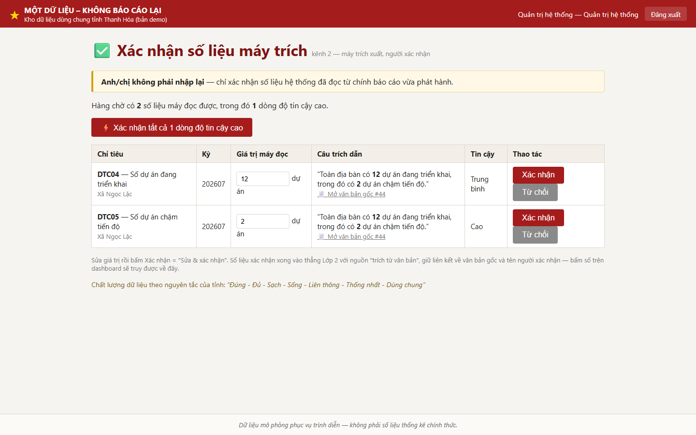
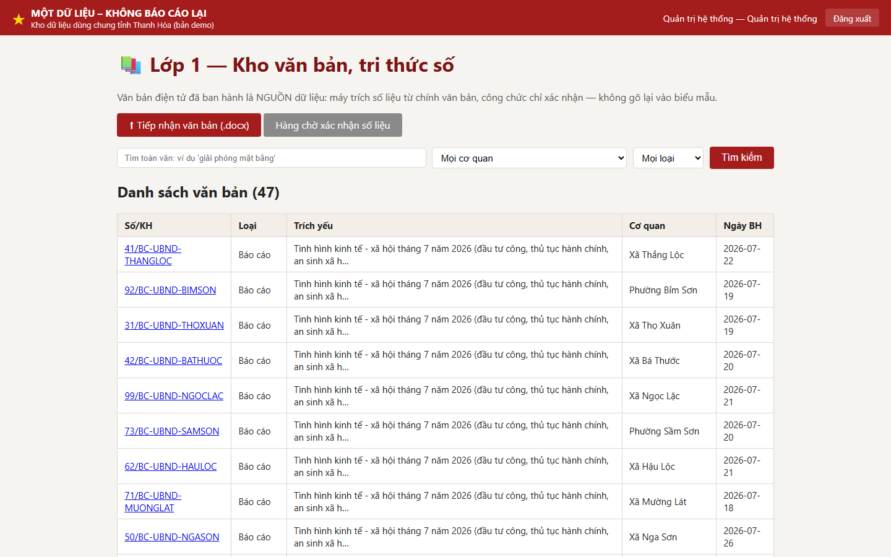
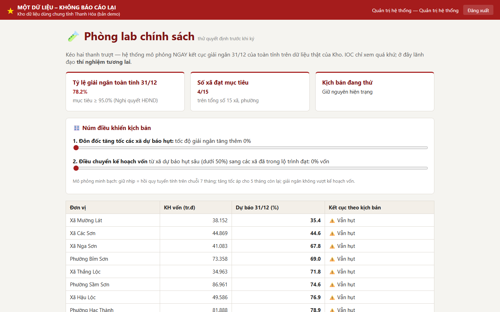
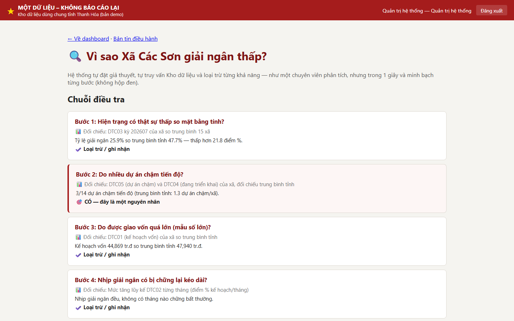
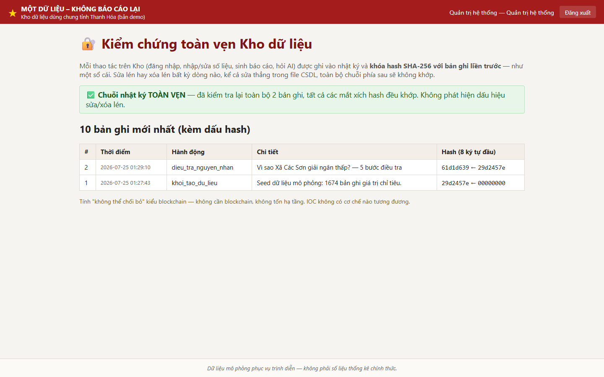
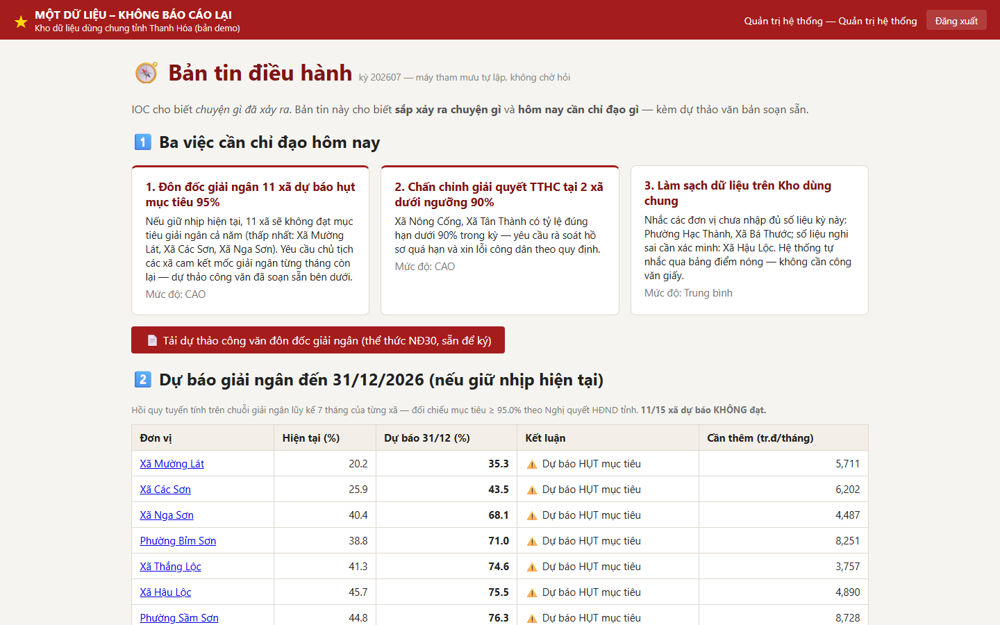
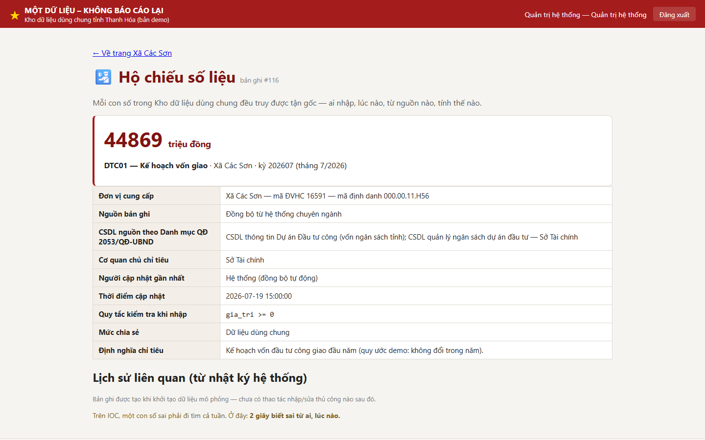
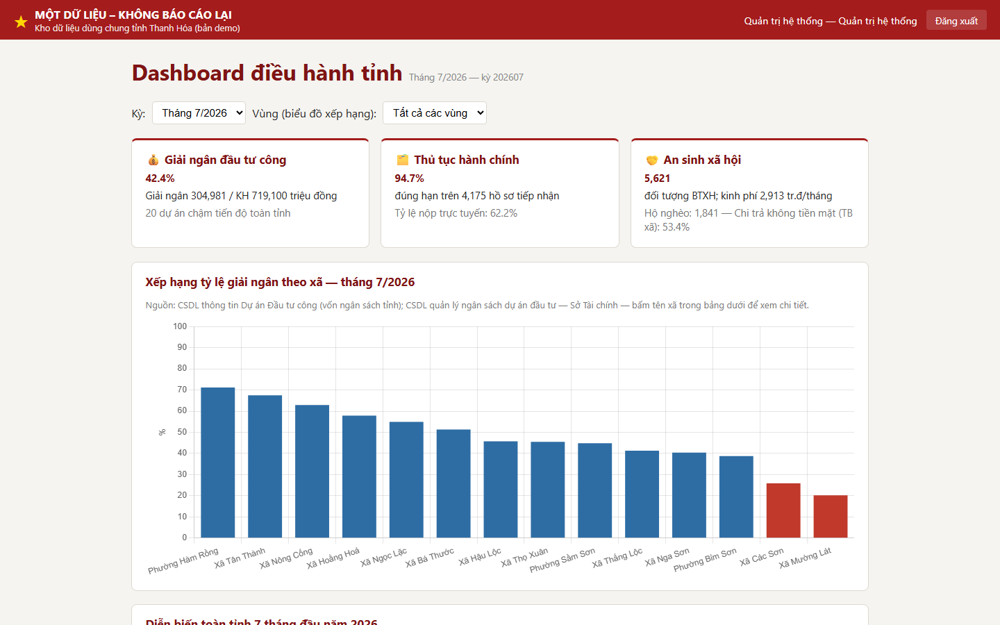
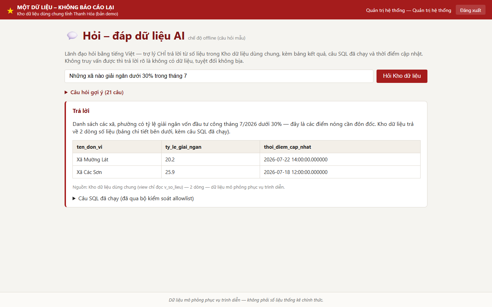
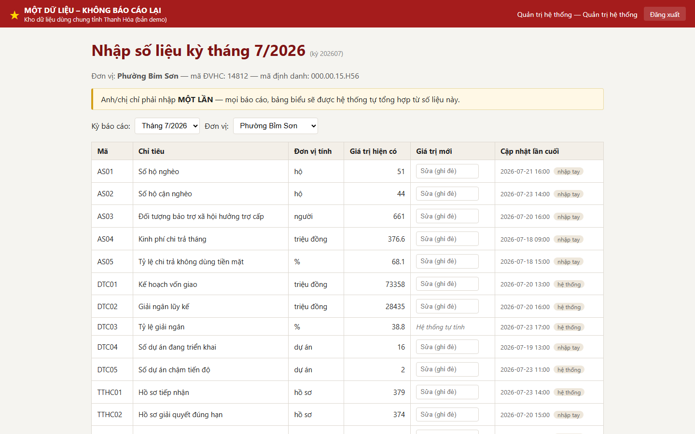
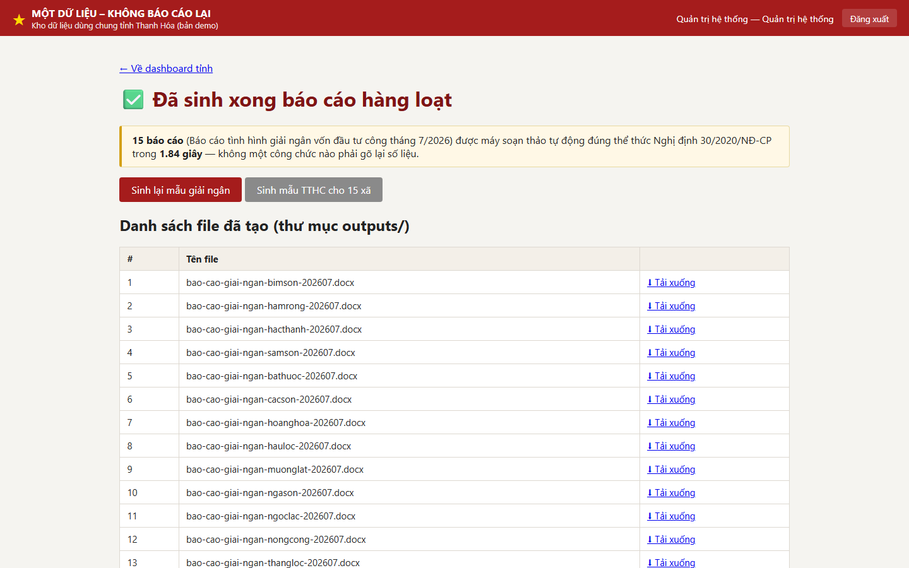
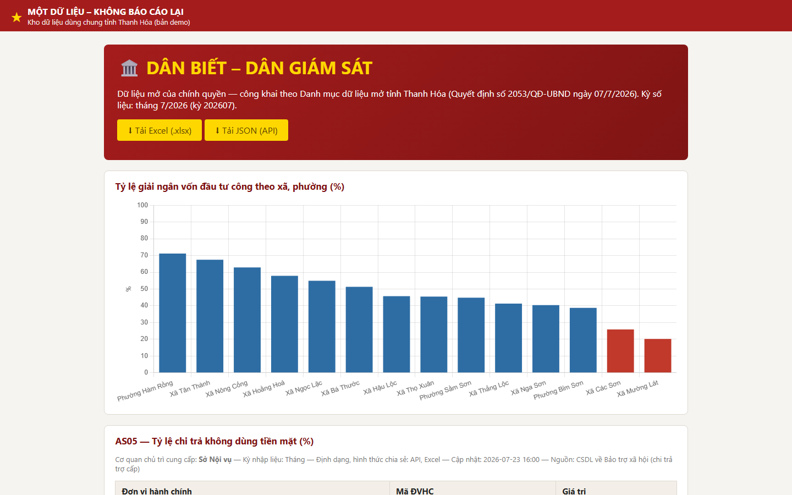
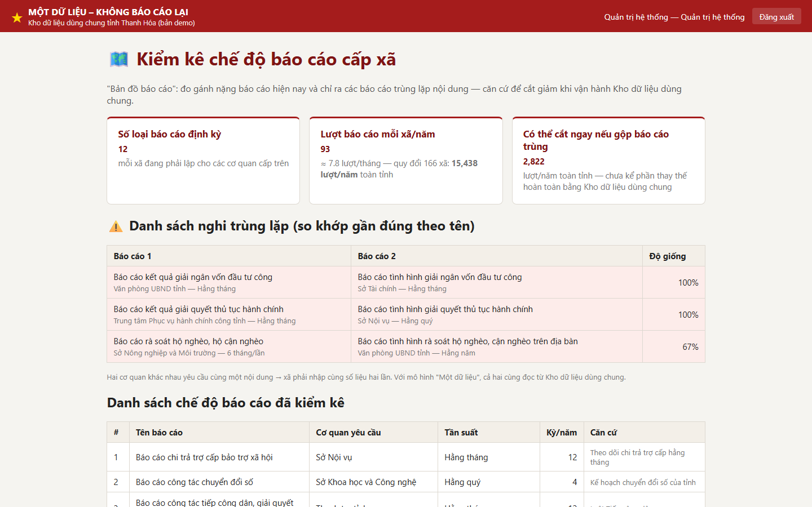
Kịch bản demo 6 phút (v0.2)
- Chuyên viên xã tải lên báo cáo tháng 7 vừa phát hành (.docx) — việc vẫn làm hằng ngày, không thêm thao tác mới.
- Hệ thống hiện ngay hàng chờ: máy đã đọc được các chỉ tiêu kèm câu trích dẫn → bấm "Xác nhận tất cả dòng độ tin cậy cao" — "Anh/chị không phải nhập lại."
- Lãnh đạo mở dashboard: số vừa xác nhận đã hiện; bấm vào con số → mở đúng báo cáo gốc — mỗi số liệu đều truy được về nguồn.
- Hỏi AI 3 câu, mỗi loại một câu: số liệu ("xã nào giải ngân dưới 30%?"), văn bản ("báo cáo nào nói về nguyên nhân chậm?"), lai ("tỷ lệ đúng hạn của Hạc Thành là bao nhiêu và có báo cáo giải trình chưa?").
- Bấm "Tạo báo cáo tháng 7 cho tất cả 15 xã" → file .docx thể thức chuẩn NĐ30 trong chưa đầy 1 giây.
- Đại biểu HĐND xem trang giám sát; người dân mở trang công khai không cần đăng nhập — "dân biết, dân giám sát".
Tự chạy trên máy (≈ 5 phút, offline hoàn toàn)
git clone https://github.com/sonthkh-alt/onedata-thanhhoa.git
cd onedata-thanhhoa
python -m venv .venv
.venv\Scripts\activate # Windows (Linux/macOS: source .venv/bin/activate)
pip install -r requirements.txt
python scripts/seed.py # tạo CSDL + dữ liệu mô phỏng
uvicorn app.main:app --reload # mở http://127.0.0.1:8000| Tài khoản demo | Mật khẩu | Vai trò |
|---|---|---|
lanhdao | Demo@2026 | Lãnh đạo — dashboard, hỏi đáp AI, sinh báo cáo |
xa.hacthanh | Demo@2026 | Chuyên viên phường Hạc Thành — nhập liệu |
daibieu | Demo@2026 | Đại biểu HĐND — giám sát |
admin | Demo@2026 | Quản trị hệ thống |
Công nghệ và chuẩn tuân thủ
- Python · FastAPI · SQLite · Jinja2 · Chart.js (đóng gói offline, không CDN) · python-docx · sqlglot.
- Thể thức văn bản: Nghị định 30/2020/NĐ-CP; danh mục dữ liệu và bộ trường thông tin theo QĐ 2053/QĐ-UBND và QĐ 2176/QĐ-UBND của tỉnh Thanh Hóa.
- Chất lượng dữ liệu: "Đúng - Đủ - Sạch - Sống - Liên thông - Thống nhất - Dùng chung"; 69 test tự động.